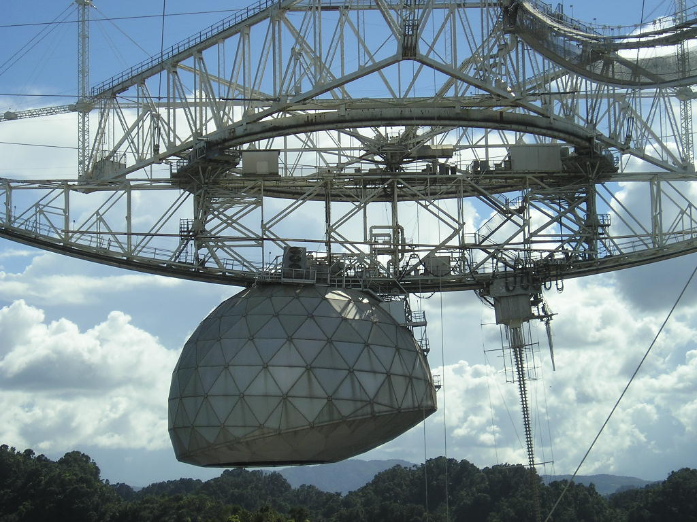

Задача трёх тел · глава 13 из 35
Красный берег. III

Кратко
Рассекреченные документы раскрывают правду: «Красный берег» — китайская программа поиска внеземных цивилизаций. Её начали из страха, что американцы или Советы первыми выйдут на контакт и получат монополию на общение с иным разумом. План — прослушивать миллионы звёзд и при случае отправить тщательно продуманное послание о Земле. Первый вариант послания был сплошной идеологической агитацией, и руководство страны его отвергло, утвердив более сдержанный текст.
Главные моменты
- «Красный берег» — не оружие, а поиск инопланетного разума.
- Контакт как символ: кто первым заговорит с иным разумом, тот и сильнее.
- Послание инопланетянам, написанное языком лозунгов, — и отвергнутое.
Значение
Холодная война переносится в космос: даже первый контакт для людей — вопрос власти и пропаганды. Е Вэньцзе получает доступ к инструменту, который однажды изменит судьбу человечества.